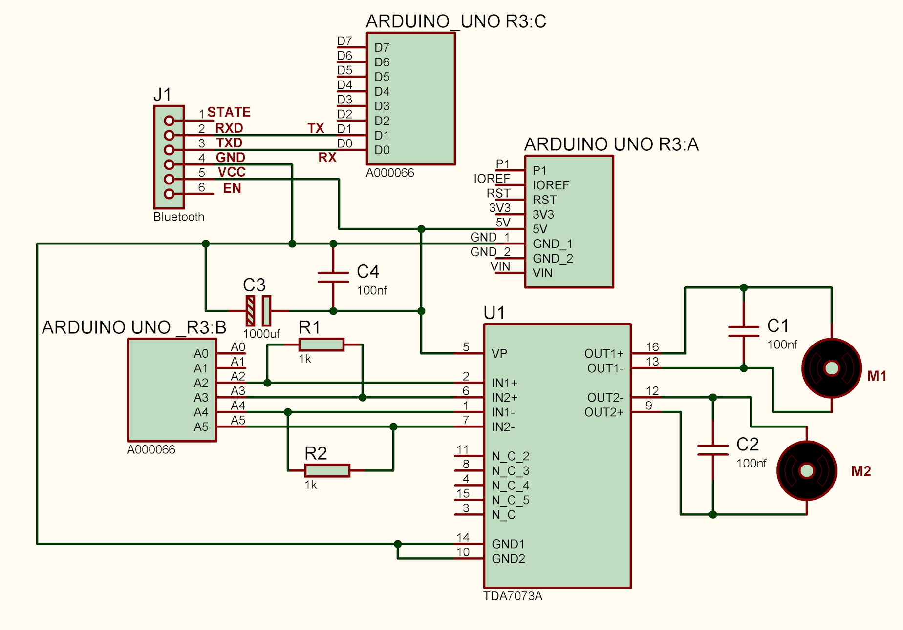
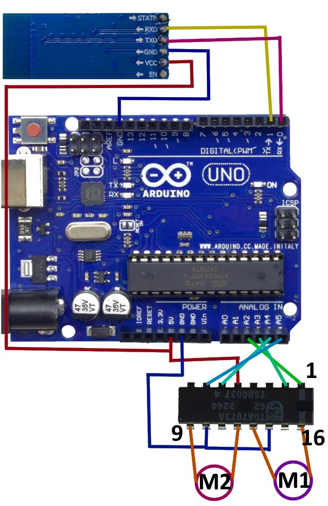

| Chip | Max Current per Channel | Voltage Range | Notes |
|---|---|---|---|
| TDA7073A | 600 mA | 3V – 18V | The one you have; great for small motors |
| L293D | 600 mA | 4.5V – 36V | Very common but old; high voltage drop |
| SN754410 | 1A | 4.5V – 36V | Improved L293 with thermal protection |
| TA7291P | 1A (2A peak) | 4.5V – 20V | Designed for DC motors; built-in flyback diodes |
| TB6612FNG | 1.2A (3.2A peak) | 15V max | Very efficient, low drop; modern L293D replacement |
| DRV8833 | 1.5A (2A peak) | 2.7V – 10.8V | Battery-friendly; full protection features |
| MX1508 | 1.5A (2.5A peak) | 1.8V – 10V | Very cheap; ideal for toys and small robots |
This Arduino sketch lets you control the speed of two DC motors independently over Bluetooth. It listens for commands via a module like HC-05 or JDY-31 on pins 10 and 11, and drives two motors through a motor driver chip.
setup() – Configures all motor driver pins as outputs, starts serial communication at 9600 baud, and sets the initial speed for each motor (speedA and speedB, default 180).applySpeed() – Applies the current speedA and speedB values to the PWM pins. Called after every speed change.forward() / backward() / left() / right() – Each function sets the direction pins HIGH or LOW to make the motors turn in the desired direction, then calls applySpeed().stopAll() – Sets all direction pins LOW and PWM to 0, cutting power to both motors.loop() – Waits for a command from Bluetooth, trims whitespace, and compares it to known strings. It also handles SPD_A:xxx and SPD_B:xxx to update each motor's speed independently.| Command | Action |
|---|---|
FWD | Move forward |
BACK | Move backward |
LEFT | Turn left |
RIGHT | Turn right |
STOP | Stop both motors |
SPD_A:200 | Set Motor A speed (0–255) |
SPD_B:150 | Set Motor B speed (0–255) |
/*
SoifGo — Speed Control Example (independent speed per motor)
Receives FWD / BACK / LEFT / RIGHT / STOP / SPD_A:xxx / SPD_B:xxx
*/
#include <SoftwareSerial.h>
SoftwareSerial bluetooth(10, 11);
// Motor driver pins
const byte ENA = 5; // PWM speed for motor A
const byte IN1 = 6;
const byte IN2 = 7;
const byte ENB = 9; // PWM speed for motor B
const byte IN3 = 8;
const byte IN4 = 12;
// Independent speed for each motor (0-255)
byte speedA = 180;
byte speedB = 180;
void setup() {
pinMode(ENA, OUTPUT); pinMode(IN1, OUTPUT); pinMode(IN2, OUTPUT);
pinMode(ENB, OUTPUT); pinMode(IN3, OUTPUT); pinMode(IN4, OUTPUT);
Serial.begin(9600);
bluetooth.begin(9600);
bluetooth.println("READY");
analogWrite(ENA, speedA);
analogWrite(ENB, speedB);
}
void applySpeed() {
analogWrite(ENA, speedA);
analogWrite(ENB, speedB);
}
void forward() { digitalWrite(IN1, HIGH); digitalWrite(IN2, LOW); digitalWrite(IN3, HIGH); digitalWrite(IN4, LOW); }
void backward(){ digitalWrite(IN1, LOW); digitalWrite(IN2, HIGH);digitalWrite(IN3, LOW); digitalWrite(IN4, HIGH); }
void left() { digitalWrite(IN1, LOW); digitalWrite(IN2, HIGH);digitalWrite(IN3, HIGH); digitalWrite(IN4, LOW); }
void right() { digitalWrite(IN1, HIGH); digitalWrite(IN2, LOW); digitalWrite(IN3, LOW); digitalWrite(IN4, HIGH); }
void stopAll() { digitalWrite(IN1, LOW); digitalWrite(IN2, LOW); digitalWrite(IN3, LOW); digitalWrite(IN4, LOW); }
void loop() {
if (bluetooth.available()) {
String cmd = bluetooth.readStringUntil('\n');
cmd.trim();
if (cmd == "FWD") { forward(); applySpeed(); }
else if (cmd == "BACK") { backward(); applySpeed(); }
else if (cmd == "LEFT") { left(); applySpeed(); }
else if (cmd == "RIGHT") { right(); applySpeed(); }
else if (cmd == "STOP") { stopAll(); }
else if (cmd.startsWith("SPD_A:")) {
int val = cmd.substring(6).toInt();
if (val >= 0 && val <= 255) {
speedA = val;
applySpeed();
bluetooth.print("SPEED_A:");
bluetooth.println(speedA);
} else {
bluetooth.println("ERR:SPEED_RANGE");
}
}
else if (cmd.startsWith("SPD_B:")) {
int val = cmd.substring(6).toInt();
if (val >= 0 && val <= 255) {
speedB = val;
applySpeed();
bluetooth.print("SPEED_B:");
bluetooth.println(speedB);
} else {
bluetooth.println("ERR:SPEED_RANGE");
}
}
}
}const byte definitions at the top.

Speed Control test ó two motors with independent speed